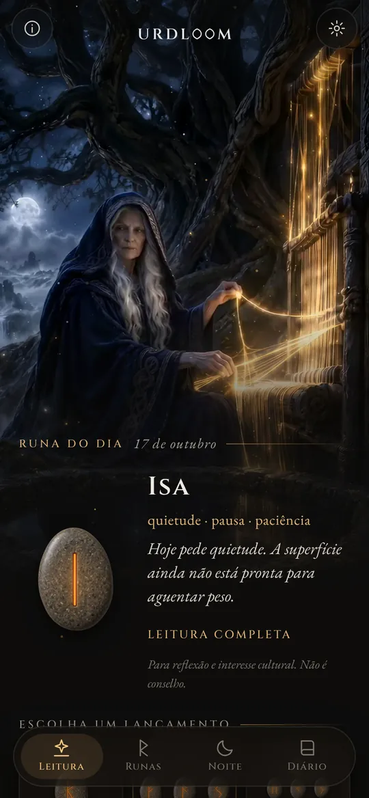
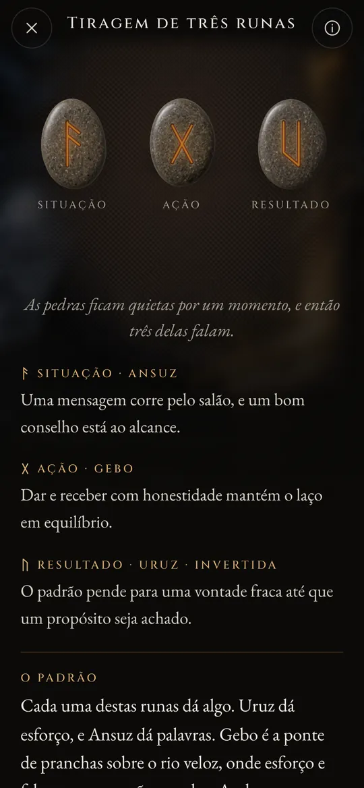
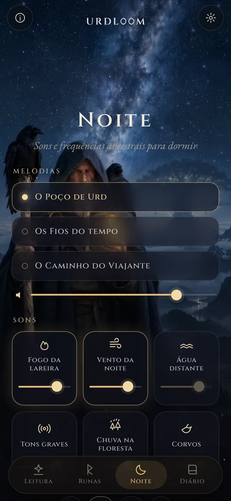
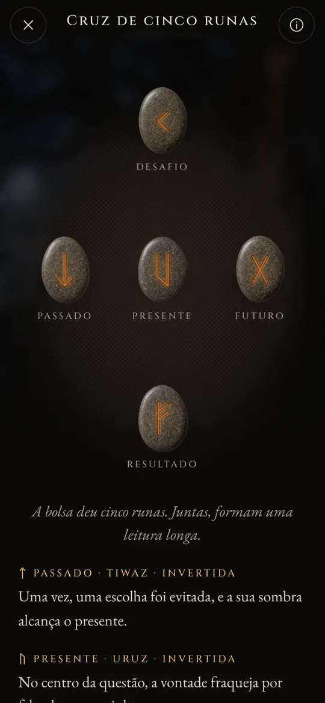

Leituras de runas do poço do destino.
Lance o Elder Futhark, leia o que cai na voz dos poemas antigos e deixe os sons da noite levarem você até o sono.
Três mulheres sentadas junto a um poço
Nos antigos poemas nórdicos, três Nornas se sentam junto a um poço sob Yggdrasil, a árvore do mundo. Elas regam suas raízes, entalham varetas e definem a vida de todos os que nascem. A mais velha é Urd. Seu nome significa aquilo que já aconteceu, e o poço leva o nome dela.
O Urdloom recebe seu nome dela e do tear em que, dizia-se, o destino era tecido. O app guarda esse clima: uma bolsa de pedras na sua mão, um pano no chão e leituras escritas na voz das sagas, e não na de um horóscopo.

De lá vêm donzelas, sábias em muito, três, da lagoa que fica sob a árvore.Völuspá, estrofe 20
Segure, agite, solte
Segure a bolsa e as pedras chacoalham na sua mão. Solte e elas voam para o pano, rolam, se acomodam e se viram uma a uma. A leitura aparece logo abaixo.

Runa única
Uma só pedra para o dia que começa, ou para uma pergunta que se responde com sim ou não. Basta um toque para lançá-la.


Tiragem de três runas
Situação, ação, resultado. Lidas da esquerda para a direita como uma saga curta e depois juntas: um fio final mostra como as três conversam entre si.

Cruz de cinco runas
Passado, presente e futuro na linha do meio, o desafio acima e o resultado abaixo, com você no coração de tudo.




Cada leitura foi escrita à mão: as vinte e quatro runas, cada par e todas as 2.024 combinações de três, em cada um dos vinte e dois idiomas. Nada é gerado enquanto você espera.

As vinte e quatro runas
O Elder Futhark é o alfabeto rúnico mais antigo, entalhado mais ou menos do século II ao VIII. Seus vinte e quatro sinais se dividem em três famílias de oito, chamadas ætts, cada uma com o nome do deus cuja runa vem à frente. Toque em uma pedra para lê-la.
O ætt de Freyr
O ætt de Hagal
O ætt de Tyr
Os nomes das runas são mantidos em sua forma antiga em todos os idiomas. São os nomes dos próprios sinais, reconstruídos por estudiosos a partir dos poemas rúnicos e dos alfabetos mais antigos.
Uma breve história das runas
Antes de qualquer outra coisa, as runas são letras. Os povos germânicos as entalharam em madeira, osso, metal e pedra durante cerca de mil e quinhentos anos. Foi assim que os sinais e o antigo costume de tirar a sorte chegaram até nós.

Sortes sobre um pano branco
O historiador romano Tácito escreve que os povos germânicos cortam um galho de árvore frutífera em pequenas tiras, marcam-nas com sinais e as espalham sobre um pano branco. Um sacerdote ou o chefe da casa ergue três, uma de cada vez, e as interpreta. Ele não diz que os sinais eram runas, mas o gesto é o mesmo que o Urdloom preserva.
As primeiras inscrições
Um pente de osso encontrado no pântano de Vimose, na Dinamarca, traz uma das inscrições rúnicas mais antigas que se conhecem, uma única palavra: harja. Pontas de lança, broches e amuletos dos mesmos séculos mostram que a escrita já estava espalhada por todo o Norte.
A fileira inteira em uma pedra
Na pedra de Kylver, em Gotland, alguém entalhou os vinte e quatro sinais em ordem, o futhark completo mais antigo que temos. A fileira recebe seu nome de suas seis primeiras letras: f, u, th, a, r, k.
Os chifres de ouro
Um dos dois chifres de ouro de Gallehus, na Dinamarca, traz um verso aliterativo: Eu, Hlewagastiz, filho de Holt, fiz o chifre. É um dos versos mais antigos de qualquer língua germânica.
Dezesseis sinais para a Era Viking
Na Escandinávia, o alfabeto é reduzido a dezesseis sinais, o futhark recente. Milhares de pedras memoriais são erguidas com suas letras, entre elas as grandes pedras de Jelling, na Dinamarca.
Os poemas ganham a escrita
Escribas islandeses registram por escrito os poemas éddicos. Na Völuspá, as Nornas se sentam junto ao poço de Urd; no Hávamál, Odin fica pendurado nove noites na árvore varrida pelo vento e toma as runas com um grito.
Um verso para cada runa
Poemas rúnicos da Noruega e da Islândia, junto com um anglo-saxão mais antigo, dão a cada runa um verso curto: o gado causa discórdia entre parentes, o granizo é o mais frio dos grãos, o gelo é muito escorregadio. Muito do que se sabe sobre os significados das runas vem desses versos.
Lendo de novo
Usar as runas para refletir é um renascimento moderno, construído sobre esses poemas e sobre as imagens das Eddas. O Urdloom se coloca abertamente nessa tradição: não afirma ser um oráculo antigo, apenas lê os sinais antigos com cuidado.

Sons e frequências ancestrais para dormir
Quando o dia termina, o viajante sai sob as estrelas. Escolha uma melodia, coloque sons por cima e ajuste um timer. Os sons continuam tocando com a tela apagada e vão sumindo sozinhos.
Três melodias: O Poço de Urd, Os Fios do tempo e O Caminho do Viajante, construídas sobre canto de garganta, tambor de moldura e tagelharpa de arco.
Seis camadas para misturar, cada uma com seu próprio volume: fogo da lareira, vento da noite, água distante, tons graves, chuva na floresta e corvos.
Cada som foi feito para o Urdloom. Nada é tocado pela internet.
Pequenas coisas que importam
- Uma runa a cada manhã
- Uma pedra espera virada para baixo na primeira tela. Se você quiser, um breve recado conta a cada manhã qual runa foi tirada para você.
- Um diário
- Guarde as leituras que falam com você, junto com a pergunta que você fez.
- Leituras para compartilhar
- Envie uma leitura como imagem: as pedras como caíram e as palavras logo abaixo.
- Vinte e dois idiomas
- Cada um escrito e revisado por pessoas que o leem, com fonte e tamanho que você pode mudar.
O que acontece aqui fica aqui
O Urdloom funciona sem internet. Não tem conta, cadastro nem anúncios, e não contém nenhum tipo de análise ou rastreamento. Suas perguntas, suas leituras e seu diário ficam no seu celular.
PrivacidadePerguntas
O Urdloom prevê o futuro?
Não. As leituras são para reflexão e interesse cultural. Elas apontam, como as runas antigas faziam, e o sentido toma forma na sua própria vida. Nada no app é aconselhamento médico, financeiro, jurídico ou profissional de qualquer outro tipo.
Por que a linguagem soa antiga?
As runas vêm de um mundo de poemas, sagas e enigmas. Escrevemos as leituras nessa voz de propósito e as mantivemos o mais perto possível da tradição rúnica, em todos os idiomas.
Preciso de conexão com a internet?
Não. Tudo, das leituras aos sons da noite, está dentro do app.
Quais idiomas estão disponíveis?
Inglês, turco, alemão, francês, espanhol, italiano, português, russo, ucraniano, polonês, holandês, sueco, norueguês, finlandês, grego, árabe, híndi, indonésio, japonês, coreano, chinês e albanês.
Escreva para nós
Perguntas, uma palavra que soa errada no seu idioma ou uma leitura que ficou com você: lemos todas as mensagens.
support@urdloom.app